Previous Works Limitation and Desirata
Sparse attention (especially dynamic token selection) has been widely studied. However, prior work falls short of building a concrete understanding of the optimal tradeoff between stability and efficiency in the RL setting.
- Sparse attention inference accuracy ↑ ≠ RL stability ↑. For downstream-task inference, sparse rollout RL instability is mainly due to per-token distribution mismatch between the sparse actor and dense policy rather than insufficient rollout rewards.
- Suboptimal convergence under severe actor-policy mismatch. Prior work (TIS, Jackpot) addresses actor-policy distribution mismatch, but often studies milder scenarios, such as staleness, where actor-policy KL divergence is one order of magnitude smaller than in sparse rollout. When directly applied, these techniques require clipping or masking significant training signals to maintain stability, leading to poor training convergence.
- Poor efficiency. Sparse rollout can be trivially recovered to achieve stable training by applying elementwise Top-k or using a huge KV budget, but these approaches do not achieve large efficiency gains.
Ideally, we desire RL with sparse rollout to:
- Enable stable dense-policy training.
- Match dense performance regardless of model size and generation length.
- Achieve strong efficiency benefits over dense rollout.
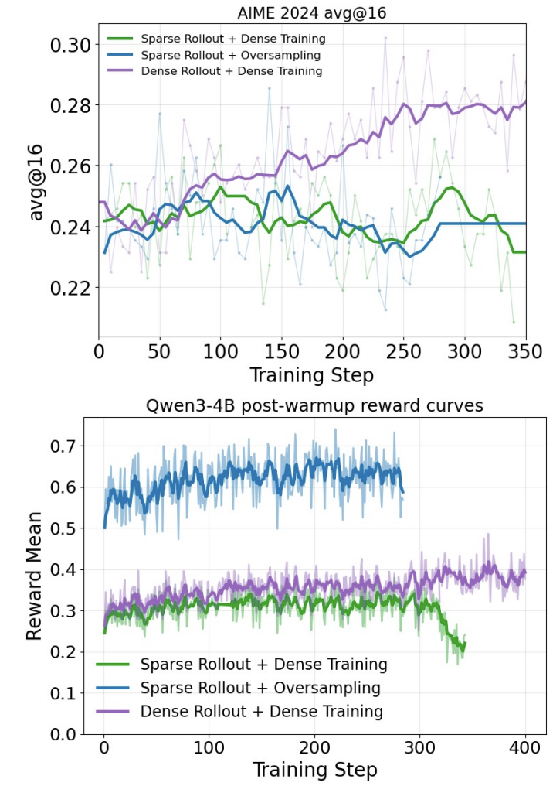

Insights to Sparse to Dense Actor-Policy Mismatch
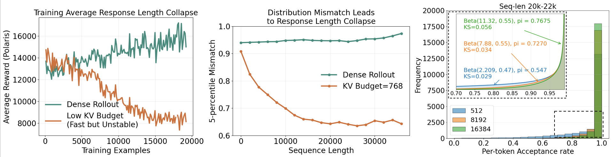
The key observation is that sparse rollout collapse is not driven by a uniform degradation across all tokens. Even under aggressive sparsity, most generated tokens remain nearly distribution-aligned with the dense policy. The unstable signal instead appears in the small fraction of tokens where sparse and dense behavior diverge.
To see this, we collect tokens from sparse-attention generations with 20K prompt length and 2K generation length, then measure each token's distribution mismatch against the dense model. The resulting distribution is highly skewed: most tokens are close to perfectly aligned, even when the sparsity budget is aggressive enough to cause RL collapse. (In fact, in the paper we show that the tail distribution can be well-modeled by a Beta Distribution) The high skewness makes average mismatch a weak stability indicator. For example, when training Qwen3-1.7B with a 37K generation budget, a KV budget of 4096 remains stable while 2560 collapses, but their average per-token sparse-dense L1 distances are still very close and very sensitive to measurement precision: 0.977 and 0.968.
We therefore evaluate sparse-dense mismatch with lower-tail statistics rather than the average. In particular, we use the lower 5-percentile to measure the worst-aligned tokens while ignoring the many "perfect" tokens that are unlikely to cause RL training collapse. This leads to the following hypothesis.
Hypothesis: if the tail distribution mismatch between the sparse actor and dense policy stays above a threshold throughout rollout, sparse rollout for dense policy RL will be stable.
For our study, we focus on block-sparse attention as a study, but we believe that the principles discovered should be applicable to other types of context compression methods.
Control Study 1: How Mismatch Threshold Varies to Increasing Model Sizes
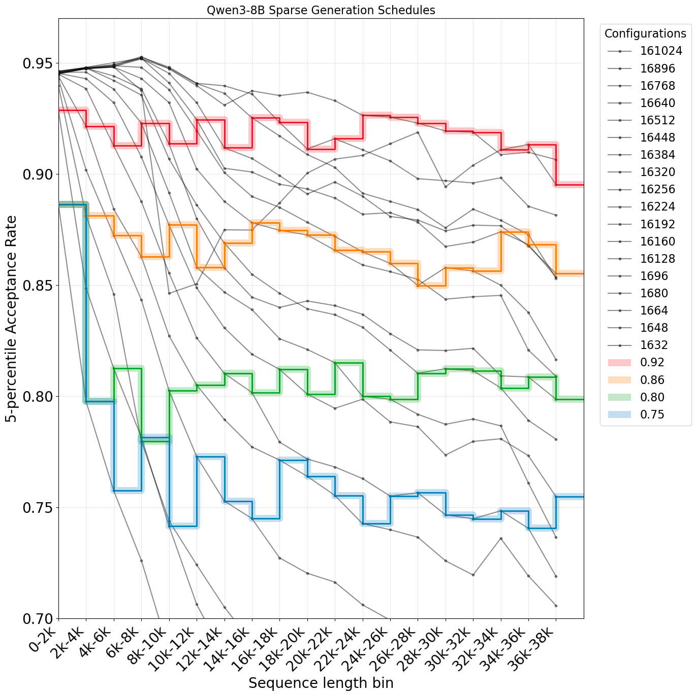
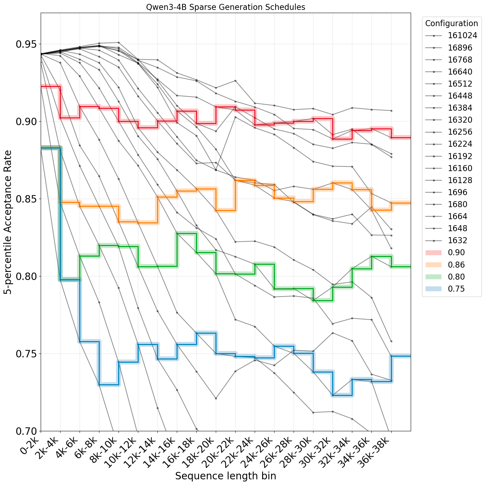
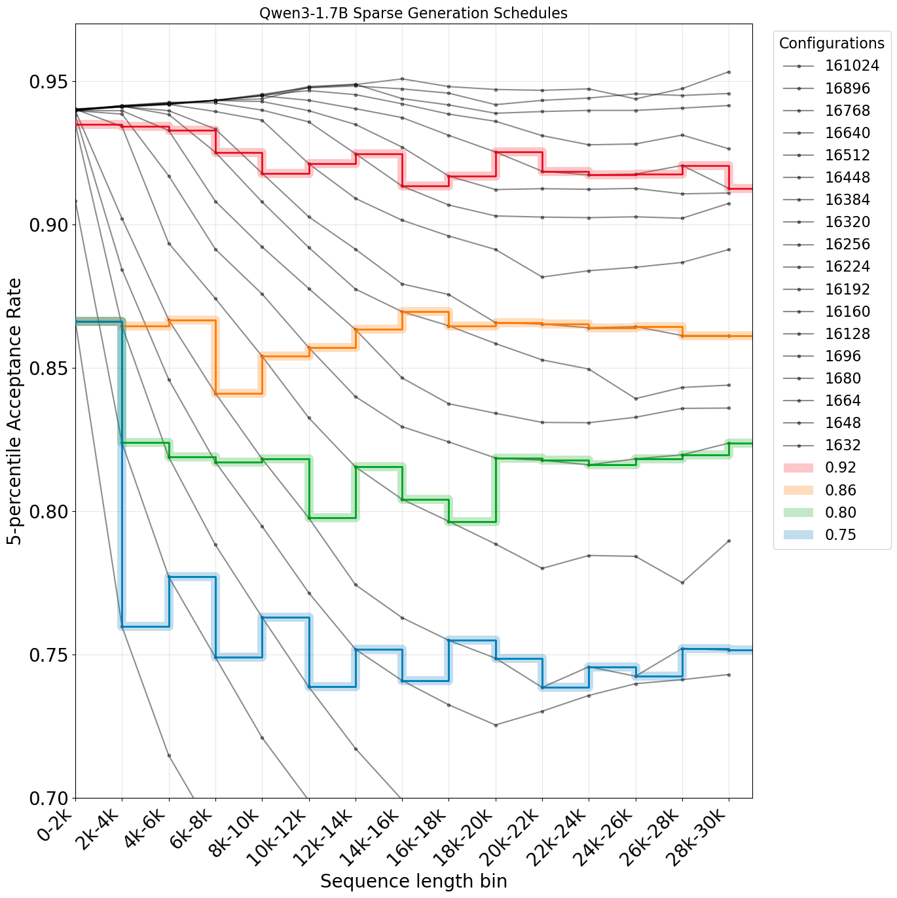
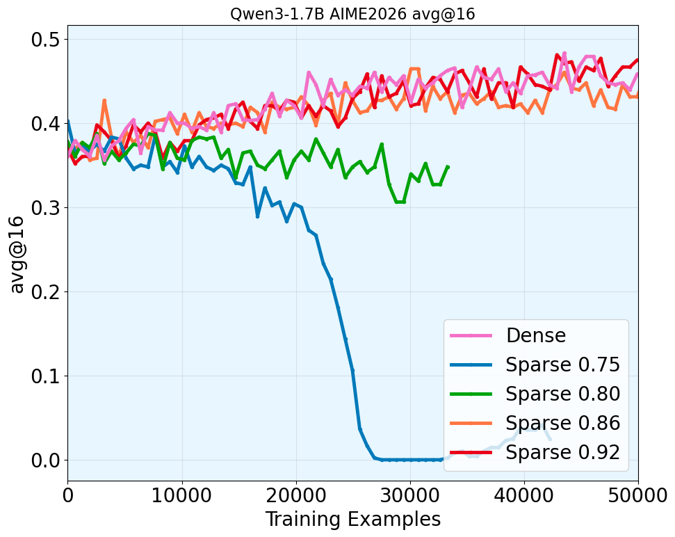
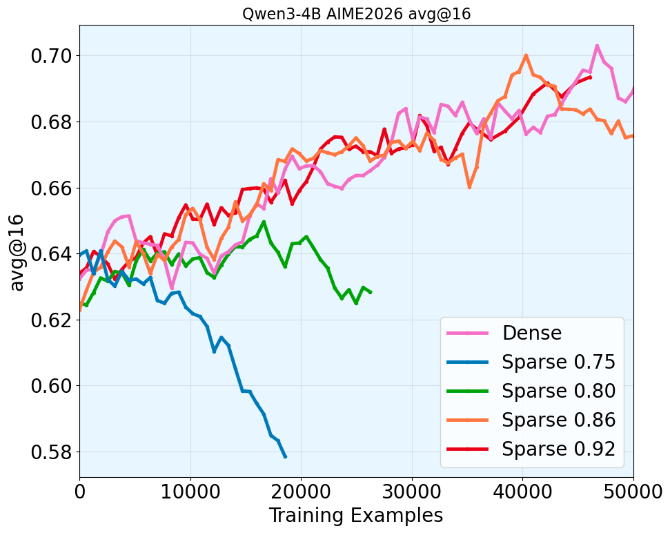
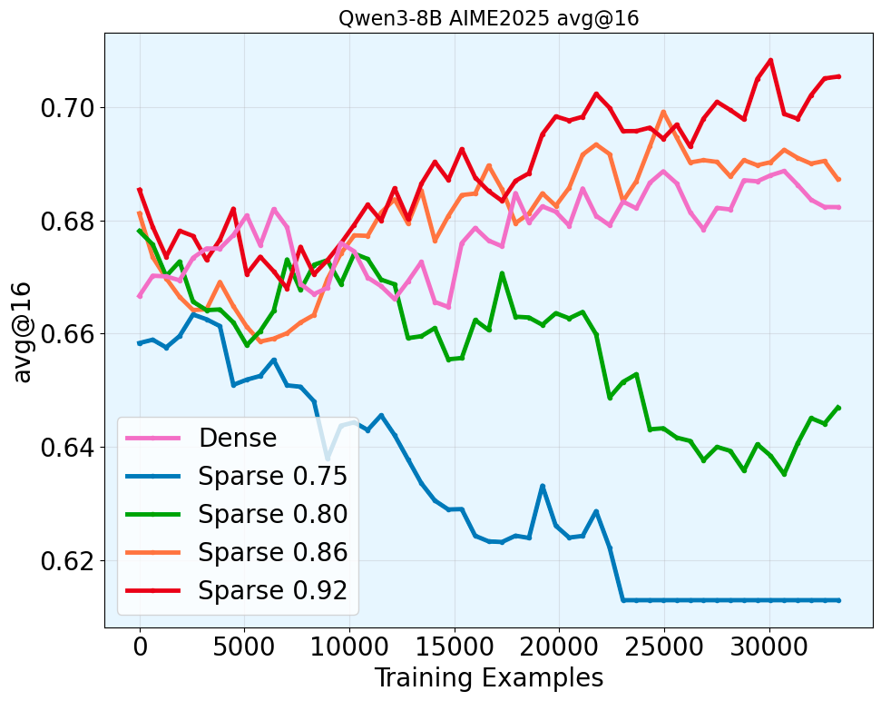
There is one main challenge to conduct systematic study of sparse dense mismatch and training stability. Under any fixed sparsity budget, the distribution mismatch always deteriorates as the generation length increases.
We introduce the technique of sparsity scheduling, which uses a more lenient sparsity budget as generation length increases to keep the per-token mismatch approximately constant throughout generation, more details in the paper. With sparsity scheduling and ability of hold the sparse dense Actor-Policy mismatch constant throughout the trajectory, we study the relationship between the target mismatch threshold and training stability. Surprisingly, we make the following finding.
Takeaway: across a range of model sizes in Qwen3 thinking family, we find that keeping 5-percentile mismatch threshold above 0.86 generally leads to stable RL training, supporting our hypothesis.
It supports that our hypothesis holds.
Control Study 2: Finding the Lowest Cost given the Mismatch Threshold
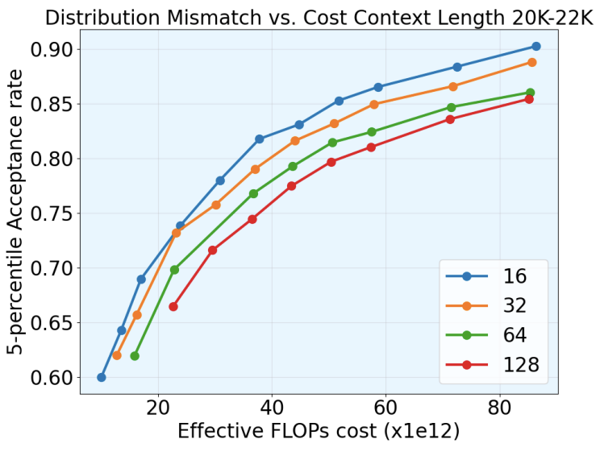
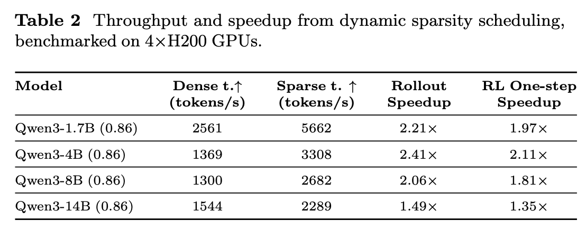
With the mismatch threshold identified, we then look for the lowest cost achievable while meeting the mismatch threshold. To make sure our analysis is general and can transfer to different hardware, we use a cost model for our analysis.
Full explanation of the cost model
We follow Sadhukhan et al. (2025)
and model rollout cost from model size and hardware memory bandwidth. For repeated sampling N times,
let P be the number of model parameters, Lin the input prompt length,
Lout the output length, D the Key/Value dimension, r the GQA ratio,
and I one over the GPU SRAM memory bandwidth.
Dense attention
Ccomp = 2 * P * N * Lout + r * (2 * Lin + Lout) * Lout * N * D
Cmem = 2 * Lin * Lout * D + N * Lout2 * D
Cdense = Ccomp + I * Cmem
For block-sparse attention, we assume Top-k kernels incur only minimal overhead for page size
≥ 16. With KV budget B and page size pagesize, the sparse cost is:
Block-sparse attention
Csparse,no scoring = 2 * N * P * Lout + 2 * r * N * D * B * Lout + 2 * I * N * D * B * Lout
Cscoring = 2 * N * Lin * D * Lout + (r * N * D * Lout2) / (2 * pagesize)
+ 2 * I * Lin * D * Lout + (I * N * D * Lout2) / (2 * pagesize)
Csparse = Csparse,no scoring + CscoringUsing this cost model, we find that for block-sparse attention with page size 16 and above, smaller page sizes consistently dominate larger page sizes in the tradeoff between dense-policy distribution alignment and cost. In the paper, we provide full details for other generation-length regimes, and the same conclusion holds across them. Although the cost model does not explicitly account for Top-k kernel overhead, our page-size measurements show that when the Top-k kernels are well implemented, as in Vortex, sparse decoding cost is not highly sensitive to page size. We therefore use page size 16 for sparsity scheduling, since it gives the strongest cost-alignment tradeoff while remaining practical for efficient sparse rollout.
Generalization to Larger Model and Other RL domains (Coding RL)
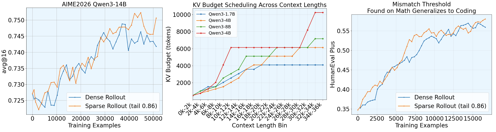
We further test our hypothesis in settings where exhaustive grid search is impractical due to limited compute. By holding the tail sparse-dense mismatch threshold at 0.86, we are able to stably train the Qwen3-14B model for a full epoch on Polaris, reaching performance on par with dense rollout. This setting is especially challenging because dense training would normally require roughly 8 days (190 hours) on a 4-node, 32-GPU H200 cluster.
Beyond math reasoning RL, we also verify that the same threshold transfers to coding RL. Specifically, we train the Qwen3-1.7B thinking model for a full epoch on TACO while maintaining the 0.86 threshold, and observe that both average reward and downstream performance remain on par with dense rollout. More details presented in paper.
DistillSparse: A Technique Pushes for More Aggressive Sparsity and Higher Speedup
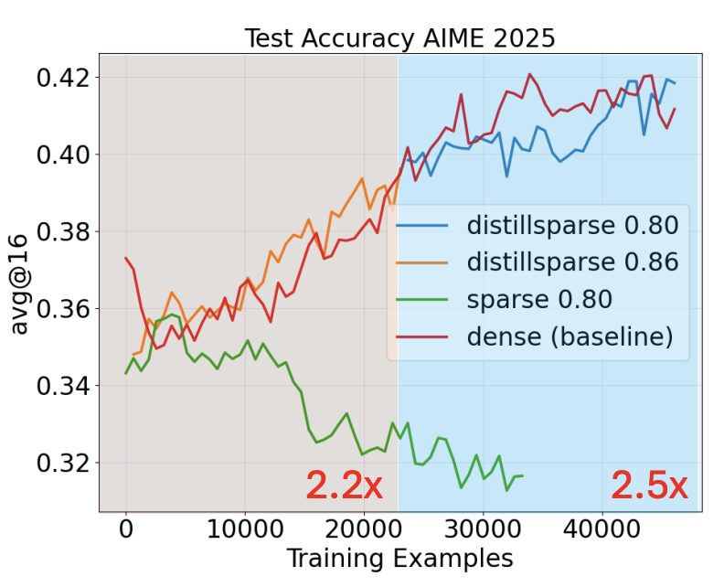
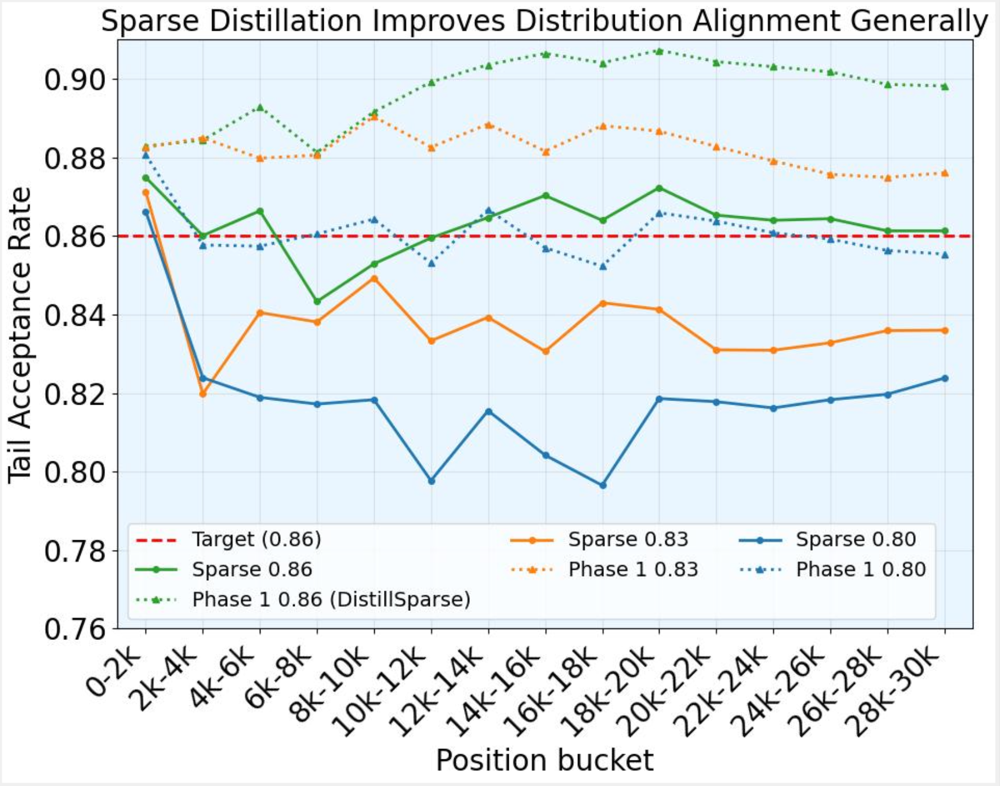
After identifying a stable sparse-dense mismatch threshold, we ask whether sparse attention can be pushed to deliver even higher rollout speedup. A useful observation is that sparse-rollout dense-policy training already contains the ingredients needed for on-policy distillation: trajectories are generated with sparse attention, while dense log probabilities are computed by the dense policy for training. This naturally provides supervision for making the sparse actor closer to the dense policy. However, main challenge is to perform this alignment without contaminating the dense policy and without adding substantial training overhead.
We propose a LoRA-based sparse distillation design. DistillSparse adds an auxiliary sparse distillation objective that actively aligns sparse rollouts with the dense policy while updating only the LoRA parameters. Starting from the original 0.86 mismatch-threshold setting, we find that after training on 20K examples, the learned LoRA generally improves sparse attention enough to make a more aggressive 0.80 sparsity setting approach the original 0.86 mismatch level, enabling higher speedup. Empirically, this LoRA-only procedure introduces minimal overhead while improving rollout efficiency; full details are provided in the paper.
Citation
If you find our study helpful to your understanding, consider citing us.
@misc{zhou2026sparrow,
title = {Sparrow: Sparse Rollout for Stable and Efficient Long-context RL of Large Language Models},
author = {Zhou, Yang and Sadhukhan, Ranajoy and Sun, Zhaofeng and Chen, Zhuoming and Kundu, Souvik and Dingliwal, Saket and Jayanthi, Sai Muralidhar and Galstyan, Aram and Zheng, Haizhong and Chen, Beidi},
year = {2026},
note = {arXiv placeholder}
}